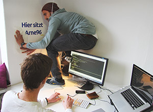
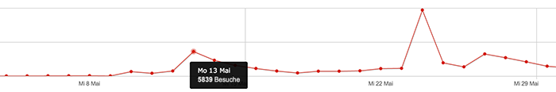
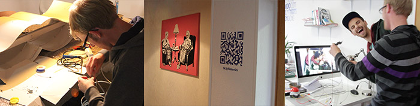
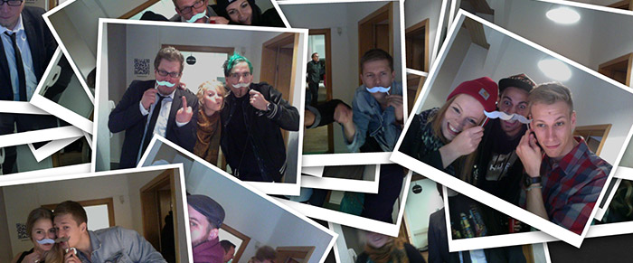
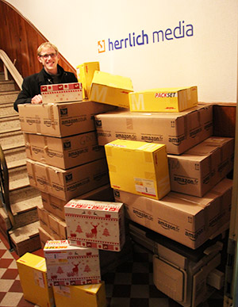

2013 – ein (h)ehrlicher Blick in unsere Welt
Das Jahr röchelt so zu Ende und ich hab während einer langen Autofahrt mal runter geschrieben was so bei uns los war. Was waren die Highlights, was lief ziemlich beschissen, was hat sich zu 2012 verändert und wie wird 2014 aussehen.
Es hat sich viel verändert, ohne wirklich anders zu sein. Alles wird größer, umfangreicher und anspruchsvoller. Wir sind jedoch die gleichen zwei Kamikaze-Nerds, die geistig noch im Keller sitzen und sich am liebsten ganztägig mit Nerfknarren gegenseitig „den Kopf frei schießen“ würden.
Sieht immer lustig aus, ist es auch meistens. Man sollte trotzdem Hodenschutz tragen.
Man merkt aber eben neben all den lustigen Spielchen und Ideen an denen wir täglich arbeiten auch, dass es langsam ernster wird. Wir haben dieses Jahr an viel mehr Projekten gebastelt mit denen, je nach Größenordnung, auch viel hängen kann und wir mit unserer spielerischen, lockeren, buddymäßigen Attitüde schnell auf die Schnauze fallen können. Da draußen gibt es nämlich auch Leute, man glaubt es kaum, die unsere Liebe zu unserer Arbeit ausnutzen und sich unsere, in manchen Bereichen noch recht unwissende Herangehensweise, zu nutze machen. So sind wir in 2013 nur knapp einigen harten Eskapaden entgangen und haben unseren Kopf, wenn auch mit riesigen Verlusten, immer aus der Schlinge ziehen können.
Untergang? Nee, lieber Regelkatalog!
Daraus haben wir sehr viel gelernt und einen Regelkatalog mit den Essenzen unserer Erfahrung erstellt. Eine dieser Regeln lautet z. B.: „Was wir machen, muss bezahlt werden“. Es klingt total beknackt, dass diese Erkenntnis fast 2 Jahre gebraucht hat um zu uns in derartiger Wertigkeit durchzudringen, aber gerade am Anfang arbeitet man eben viel um sich ein Portfolio aufzubauen und nimmt auch gerne Mehraufwände in Kauf um ein schönes Ergebnis zu erreichen. Diesen Anspruch haben wir jetzt sogar noch deutlich stärker als früher, nur eben nicht mehr mit dem Kompromiss „Ach, eigentlich egal was der zahlen will, der kriegt was in unserer Macht steht. Scheiß erst mal auf das Budget“.
Dieser Einstellungswandel ist bedingt durch viele Major-Updates in 2013:
- Wir haben nun einen festangestellten Entwickler
- Breast-Feeding von unseren Sugerdaddy Sven ist vorbei. Wir sind ausgezogen und genießen nicht mehr die Vorteile einer Untermieterschaft mit free Wifi, kostenlosen Strom, Drucker und vielem mehr
- Wir zahlen jetzt richtige Miete für ein richtiges Büro
- Da wir nichts hatten, mussten wir alles kaufen. Tische, Lampen, Rechner, Beamer, Glotze, neue vernünftige Bürostühle und natürlich viel Spielzeug
- Da wir keine Lust auf den Nervkram mit anderen Hostern haben, bieten wir unseren Kunden immer an ihre Seiten bei uns zu hosten und somit sind auf dieser Seite natürlich die Serverkosten gestiegen

Alles in allem müssen wir mittlerweile monatlich ein recht hungriges herrlich media Monster füttern und befinden uns somit in der Entscheidungszwickmühle. Entweder wachsen und anfangen komplexere Strukturen anzunehmen oder die Größe beizubehalten, 50% der Anfragen abzusagen und weiter frei spielen zu können.
Kundenakquise machen wir nie. Also fast nie.
Wir genießen seit Anbeginn den Luxus unsere Kunden nicht akquirieren zu müssen, sondern einfach Mail und Telefon zu checken. Bis auf 2 Ausnahmen haben wir uns noch nie um einen Job gekümmert, sondern die kamen immer alle zu uns.
Dieser Effekt wurde durch unsere online Präsenz natürlich noch verstärkt. Da wir Anfang 2013 umgezogen sind, mussten wir Briefpapier und Visitenkarten anpassen und haben die Chance dann gleich genutzt und aus unserer UG eine GmbH gemacht, damit wir den Kram nicht zweimal drucken lassen müssen. Bei der Gelegenheit haben wir auch gleich unsere CI angepasst und auf 3 neue Farben umgesattelt. Dazu haben wir unseren Schriftzug von dem Schnurrbart gelöst um den Schnurrbart im nächsten Schritt ganz wegfallen zu lassen.

Hipster-Mustache-Logo-Hint: Ich habe das Logo gebaut bevor der Schnurrbart so populär wurde, anschließend kam der riesige Hype, alle haben uns Fotos auf die Pinnwand gepostet und ständig neue Schnurrbart Accessoires geschickt. Nun ist die Zeit (bis auf den November in jedem Jahr) langsam vorbei und die Leute verbinden uns fälschlicher Weise mit Hipster-Nachzüglern die „billiges“, „amateurhaftes“ Styling anwenden :)
@heartcrazed Weil das einfach nur doof aussieht. Amateurhaft. Billig. „Wir müssen noch was Hipstermäßiges reinmachen“ „Mustache!“ URGS
— Svenja Hardt (@LipsWithBeat) 29. Oktober 2013
Neue Website. Es gibt uns wirklich.
Zu dieser neuen CI haben wir es in 2013 auch endlich geschafft unsere Baustellenseite durch eine eigene, vollwertige, fullresponsive, retinaready Website zu ersetzen. Das Ergebnis war ein ziemlicher Erfolg und wir haben bis auf den FWA Award so ziemlich alle Onlinepreise gewonnen, die mir wichtig waren. Neben der Ehre zu den besten 365 Websites im Jahre 2013 zu gehören und bei allen großen CSS-Inspiration als Website of the day gelistet zu sein, haben wir tausende Besucher aus der ganzen Welt zu gezielten Detailbereichen der Website erhalten. Most inspirational Team-Pages, best 404-Pages, freshest color-scheme in webdesign, cool endless-scroll examples, best html5 video implementation und viele weitere.

Man kennt uns jetzt. Große Kunden klopfen an.
Diese Listings waren ein super Push für unsere Website und haben uns Anrufe von neuen Kunden aus der ganzen Welt eingebracht. War schon ein cooles Gefühl, Kontaktanfragen von Firmen wie ING Diba zu bekommen. Wir sind mittlerweile auch den großen Herausforderungen viel mehr gewachsen und die anfängliche Angst zu versagen, gerade bei neuen Technologien die Lernkurve einschätzen zu können, weicht der Lust auf immer wieder neue Aufgaben und Chancen um uns auszutoben. Außer mobile Testing. Das ist und bleibt beschissen.
Es wird somit auch immer deutlicher wo unsere Stärken liegen. Haben wir damals noch alles gemacht was man im Internet so machen kann, machen wir heute nur noch fast alles was man im Internet so machen kann :)
Wir bauen nur noch responsive Seiten auf WordPress Basis, gerne mit individuellen Shoplösungen und noch lieber komplexe Projekte. Individual-Entwicklung mit nem schönen Stück Konzeption, grafischer Gestaltung und am liebsten auch die anschließende Vermarktung der Idee. Da hier durch die beste Crew im Internet (Lea, Dennis, Luke, Christian, Arne und viele mehr) unser Fokus liegt, bauen wir neben den Kundenprojekte natürlich fleißig an Eigenprojekten, die uns langfristig unabhängig machen sollen.
Eigenprojekte sind wichtig fürs Ego, die Seele und das Team. Aber das Team muss dann auch eins sein.
Neben mittlerweile recht gut laufenden Firmen wie Artyvects und Dry Aged Beef betreuen wir noch viele kleine und große Eigenprojekte. Da werden in 2014 noch mal 2 neue große Hoffnungen dazu kommen in die sehr viel Zeit und Geld fließen wird. Eins der größten Learnings aus diesem Jahr war, keine Projekte mehr mit „Fremden“ zu machen. Wir haben im ersten Jahr vielen Kunden angeboten anstelle einer angemessenen Bezahlung, eine Beteiligung an der Idee und Unternehmung zu erhalten und uns so, je nach Potenzial, natürlich noch mehr reinzuhängen. Das brachte uns in 95% der Fälle nicht den Benefit, den wir uns von dem Projekt erhofft haben, oder führte zu anstrengenden Gesprächen und somit arbeiten wir vorerst nur noch mit unserm eingeschworenen Team an Eigenprojekten. Hierbei werden immer völlig selbstverständlich an alle Beteiligten faire Anteile vergeben und die Aufgabenverteilung ist klar. So geht alles deutlich schneller und das Ergebnis ist vorhersehbarer.
Auf die neuen Projekte sind wir natürlich am meisten gespannt, weil man seine Babys ja gerne wachsen sieht, aber wir arbeiten auch schon wieder an einigen sehr geilen Kundenprojekte, die parallel launchen werden. Die Kundenseite ist in 2013 stark gewachsen und wird immer ein Bestandteil von herrlich media sein. Unser Umsatzziel haben wir 2013 zwar nicht ganz erreicht, aber das macht nichts und die Ursachen sind uns sehr klar. Wer einen Monat damit verbringt eine Party zu organisieren und Steuerungseinheiten für beleuchtete Schnurrbärte programmiert darf sich nicht wundern, wenn am Ende des Jahres n paar Euro weniger da sind als geplant.
Party Spektakel
Da wir unser erstes Jubiläum und alle erreichten Ziele bis zu diesem Jahr nie richtig zelebriert haben, wollten wir mit der ersten richtigen Party richtig auf die Scheiße hauen. Dazu gibt es bald einen ausgiebigen Artikel, da wir die 4 wöchige Planungsphase mit Videos dokumentiert haben. Uns war wichtig einige fette Ideen dazu umzusetzen.

Also gab es auf der Party:
- Steuerbare Außenwerbung bei der unsere Freunde über eine mobile Anwendung die Farbe unseres plastischen Schnurrbarts wählen konnten
- CheckIn-App über die man direkt bei 4sq und FB einchecken konnte
- Kickertunier mit den dicksten Nerfwaffen für die ersten 3 Teams (jeweils 2 Knarren)
- Wir hatten ein geniales Buffet (Danke an Zora)
- Amerikanischen Hot-Dog-Stand mit Schirmchen auf unserm Balkon
- Und eine Foto App (Siehe Bilder bzw. alle auf FB) die wir natürlich selbst geschrieben haben. Titel: Berührungen erschaffen Erinnerungen. Dabei mussten sich min 2 Gäste unsern aus Metall ausgefrästen Schnurrbart vors Gesicht halten und sich dann gegenseitig berühren. Durch die Berührung wird der Stromkreis geschlossen und ein Bild gemacht. Wenn einem das Bild nicht gefiel, konnte man es durch das Treten auf einen Notschalter löschen. Alle gespeicherten Bilder, liefen im Konfi-Raum auf der großen Glotze in einem random Loop.

Ausgebucht bis Mitte 2014. Wir brauchen Verstärkung.
Unsere Ideenliste wird jedenfalls immer länger und wir würden gerne viel mehr davon umsetzen. Dafür versuchen wir die Waage zwischen Einkommen durch Kunden und Ausgaben durch Eigenprojekte so zu halten, dass wir uns weiterhin völlig frei verwirklichen können, ohne Angst um unser herrliches Agentur-Monster haben zu müssen. Bis Mitte 2014 sind wir im Grunde schon komplett ausgebucht und nehmen nur noch Projekte an, auf die wir wirklich Bock haben, da sie noch längere Tage und Nachtschichten am Wochenende bedeuten würden. Aus dem Grund suchen wir auch noch min. 1 Entwickler/Entwicklerin im Frontendbereich mit sehr guten Kenntnissen in html, js, css3, php, Bock auf Neues und einem unstillbaren Wissensdurst auf neue Technologien.
So, reicht jetzt auch langsam. Dafür das ich eigentlich kaum lesen und schreiben kann habe ich n ganz schönen Brocken runtergetippt.
To put it in a nutshell
Zusammenfassend war es also ein sehr erfüllendes und anstrengendes Jahr mit einigen kostspieligen Rückschlägen und dafür viel Props von unseren Freunde auf der Haben-Seite. Wir haben ein neues Büro mit Fenstern, neue CI inkl. Website und neuen Visitenkarten (mit farbigen Schnittkanten, bitch), unseren ersten Festangestellten, ausgebautes Freelancer-Team, unser 2 jähriges Bestehen mit einer fetten Party gefeiert, unsere UG in eine GmbH gewandelt und sehr viel dazugelernt und ausprobiert.
Nachdem wir letztes Jahr Nerfknarren an unsere Freunde und Kunden verschickt haben, wollten wir dieses Jahr auch wieder mit ner Geschenkeladung ausklingen lassen und hoffen ihr freut euch alle über eure Pakete. Wen wir vergessen haben, sorry. Kommt einfach mal bei uns vorbei und dann geben wir ein Entschuldigungsbier aus.
Wir freuen uns auf 2014 und hoffen ihr bleibt im Team herrlich media. Wir brauchen euren Support und sind sehr dankbar für eure Unterstützung.
Cheers Baby,
Fynn & Florian